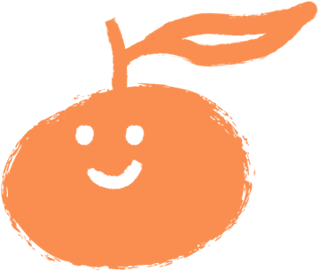
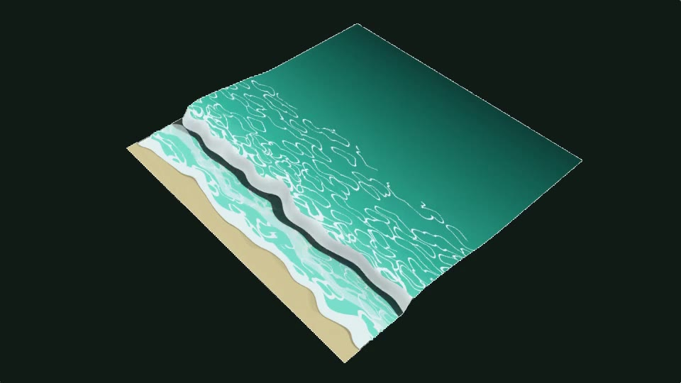

Clémentine Garoche
3D Environment Artist
Technical Artist
Montpellier (France)



Shoreline Shader
Aperçu de mes projets · cliquez sur une vignette
1 / 7

3D Environment Artist
Technical Artist
Montpellier (France)

Aperçu de mes projets · cliquez sur une vignette
1 / 7